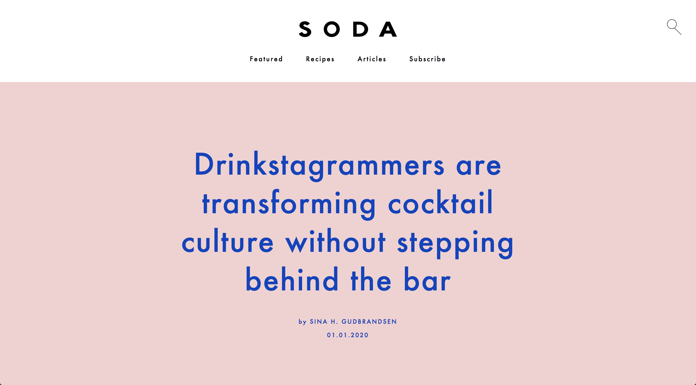
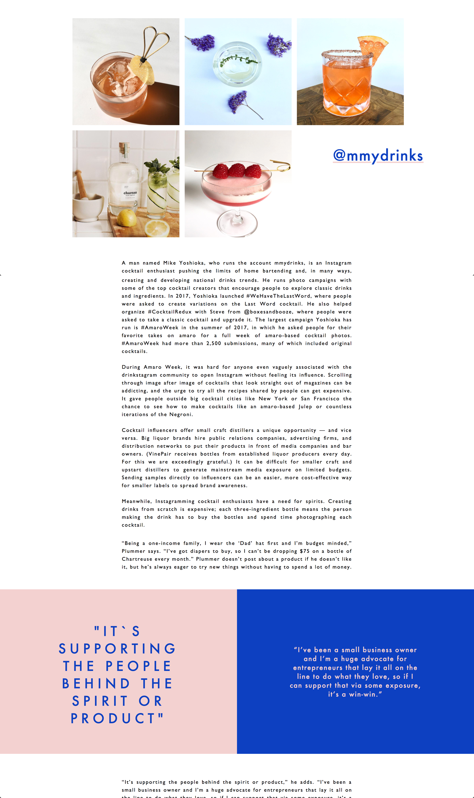

Digital magazine
Soda magazine
Soda Magazine ble laget i et tema hvor oppgaven var å lage et digitalt magasin. SODA er et digitalt magasin for de med en forkjærlighet for cocktails og deres kunst. SODA har et fokus på det nye, det pene, det kunsterniske og det artistiske. I magasinet kan brukeren finne oppskifter på drinker, tips og triks for å lære noe nytt og bli inspirert av andre.
Hei!
Mitt navn er Sina Hoelstad Gudbrandsen. Jeg er 26 år. Bosatt i Oslo, men kommer fra Hamar.
Jeg er utdannet grafisk designer og interaksjonsdesigner ved Høyskolen Kristiania(fagskole).
Jeg jobber for å skape brukervennlige løsninger med mening og relevanse.
Gjennom undersøkelser, brukertesting og masse skisser skapes klientens visjon til en brukervennlig opplevelse.
Jeg jobber med web design(html5, ccs3, samt litt javascript), InDesign, Illustrator, Sketch og Invison.
Er også veldig interessert i å utvikle så har jobbet smått med React hvor jeg jobber videre for å forbedre mine evner.
Ta gjerne kontakt
Mail : Sinahgudb@gmail.com
LinkedIn : Sina Hoelstad Gudbrandsen
I SODA skal vakkert design være front and center. Magasinet skal ha fokus på det vakre og elegante ved cocktails og bruke dette til inspirasjon for hver enkelt artikels oppsett. Stemningen fra artikelens tema skal tas opp i bilder, farger og fonter. Dette vil gi hver artikkel et eget utseende samtidig som det har SODAs tone of voice og gjenkjennbarhet.
 Se nettsiden herTa gjerne kontakt